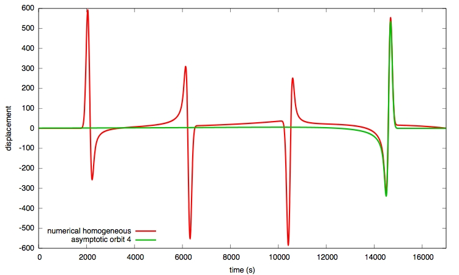
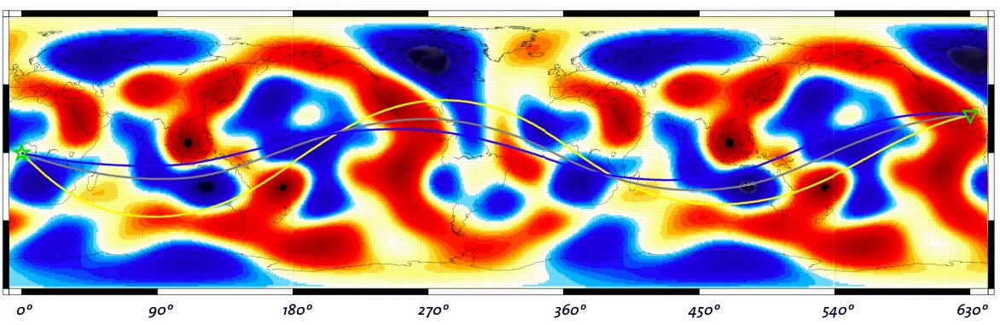
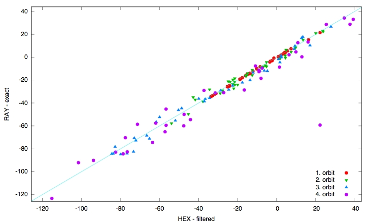
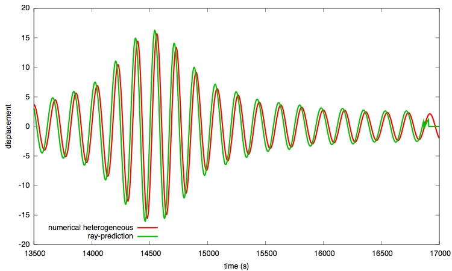

waveform predictions
Asymptotic waveforms
A traveling-wave formulation for displacements on a spherical membrane has been derived for a simplified source model. It gives us the asymptotic traces for a single orbit of interest for a homogeneous background Earth.We choose an initial source/station couple placed such that the epicentral distance is about 90 degrees. This figure shows the trace for the forth orbit obtained either by the asymptotic approach or a numerical finite-difference integration.

ray-theoretical travel-time and amplitude anomalies
A reference case is chosen for a source/station couple such that multipathing occurs (source at equator 0 N/ 0 W, station at about 25 N/ 90 W). We obtain 3 ray paths arriving at the station location for the forth orbit.
The heterogeneous model uses the TW95 phase-anomaly map for Love waves at 150 s period with a spherical harmonics expansion up to degree 10. The ray-tracing algorithm calculates for each ray the corresponding phase and amplitude anomaly. The phase anomaly is further divided by the angular frequency to obtain the corresponding travel-time anomaly for monochromatic waves with a period of about 150 seconds.
These values are compared with the travel-time and amplitude anomaly obtained by a nonlinear downhill-simplex algorithm (by Nelder and Mead) of a reference trace computed numerically within the homogeneous model and a second trace computed within the heterogeneous model respectively. The two numerical traces are filtered around the same corresponding angular frequency.
| ray-tracing algorithm | numerical downhill simplex | |||||||||
| travel-time anomaly (s) |
|
-97.1 | ||||||||
| amplitude anomaly |
|
1.90 |
This is the only multipathing case found under 38 investigated couples with about 90 degree epicentral distance from the source at 0 N / 0 W. The following figure compares the travel-time anomalies calculated either by ray-tracing (RAY-exact) or the numerical algorithm (HEX - filtered).

waveforms for a heterogeneous model
The ray-theoretical predicted values are applied to the monochromatic wave obtained by filtering the asymptotic trace for the forth orbit (from above). The predicted trace is compared to the numerically computed trace in the heterogeneous model.
The figure shows the traces in the timewindow chosen for the numerical algorithm to determine the travel-time and amplitude anomalies. In the ray-theoretical case, I apply travel-time and amplitude correction for each ray separately to obtain each single waveform and finally sum up all three waveforms to obtain the resulting one shown here valid for the heterogeneous model.
Why is the resulting waveform from ray-predicted values shifted by about 18 seconds with a slightly bigger amplitude of about 5 percent?